건축기사 (2011-10-02 기출문제)
1과목: 건축계획
1. 주거단지의 교통계획에 관한 설명으로 옳지 않은 것은?
- 근린주구 단위 내부로의 자동차 통과 진입을 극소화한다.
- 주요 차도와 보도의 입구는 명백히 특징지을 수 있어야 한다.
- 단지 내의 통과교통량을 줄이기 위해 고밀도지역은 단지 중심부에 배치시킨다.
- 2차 도로체계(Sub－system)는 주도로와 연결되어 쿨드삭(Cul－de－sac)을 이루게 한다.
(정답률: 84%)

2. 다음의 건축물 중 주심포식 건축양식에 해당하지 않는 것은?
- 강릉 객사문
- 부석사 조사당
- 봉정사 극락전
- 위봉사 보광명전
(정답률: 47%)
3. 부엌의 설비기구 배치형식에 관한 설명으로 옳지 않은 것은?
- 일렬형은 소규모 주택에 적합하다.
- 병렬형은 작업동선이 가장 긴 형식이다.
- ㄱ자형은 식사실과 함께 이용할 경우에 많이 사용된다.
- ㄷ자형은 평면계획상 외부로 통하는 출입구의 설치가 곤란하다.
(정답률: 81%)
4. 다음 중 도서관에서 장서가 50만 권일 경우 능률적인 작업용량으로서 가장 적정한 서고의 면적은?
- 1,500m2
- 2,500m2
- 4,000m2
- 4,500m2
(정답률: 88%)
5. 은행의 주출입구에 관한 설명으로 옳지 않은 것은?
- 겨울철의 방풍을 위해 방풍실을 설치하는 것이 좋다.
- 내부 출입문은 도난방지상 안여닫이로 하는 것이 좋다.
- 어린이들의 출입이 많은 곳에서는 회전문을 설치하는 것이 좋다.
- 이중문을 설치하는 경우, 바깥문은 바깥여닫이 또는 자재문으로 하는 것이 좋다.
(정답률: 91%)
6. 현존하는 우리나라 목조 건축물 중 가장 오래된 것은?
- 부석사 무량수전
- 봉정사 극락전
- 법주사 팔상전
- 화엄사 보광대전
(정답률: 76%)
7. 공장 건축계획에 관한 설명 중 옳지 않은 것은?
- 평면계획시 관리부분과 생산공정부분을 구분하고 동선이 혼란되지 않게 한다.
- 공장건축의 형식에서 집중식(Block Type)은 건축비가 저렴하고, 공간효율도 좋다.
- 공정중심의 레이아웃은 소종다량생산(小種多量生産)이나 표준화가 쉬운 경우에 적합하다.
- 공장 작업장의 지붕형식으로 균일한 조도를 얻기 위해 톱날지붕을 도입하는 경우가 있다.
(정답률: 74%)
8. 병원건축의 형식 중 분관식(Pavilion Type)에 관한 설명으로 옳은 것은?
- 고층 집약형의 형태이다.
- 각 병실의 채광 및 통풍 조건이 우수하다.
- 환자의 이동은 주로 엘리베이터를 이용한다.
- 외래부, 부속진료부는 저층부에 병동은 고층부에 배치한다.
(정답률: 84%)
9. 우리나라 전통의 한식주택에서 문꼴 부분의 면적이 큰 이유로 가장 적합한 것은?
- 겨울의 방한을 위해서
- 하기의 고온다습을 견디기 위해서
- 출입하는 데 편리하게 하기 위해서
- 동기에 일조효과를 충분히 얻기 위해서
(정답률: 86%)
10. 극장의 평면형에 관한 설명으로 옳지 않은 것은?
- 프로시니엄형은 강연, 콘서트, 독주 등에 적합하다.
- 애리나형에서 무대의 장치나 소품은 주로 낮은 기구들로 구성된다.
- 애리나형은 가까운 거리에서 관람하면서 가장 많은 관객을 수용할 수 있다.
- 오픈 스테이지형은 연기자와 관객의 접촉면이 1면으로 한정되어 있어 많은 관람석을 두려면 거리가 멀어져 객석 수용능력에 있어서 제한을 받는다.
(정답률: 86%)
11. 병원건축계획에 관한 설명으로 옳지 않은 것은?
- 병실 출입구는 침대가 통과할 수 있는 폭이어야 한다.
- 간호단위의 구성시 간호사의 보행거리는 24m 이내가 되도록 한다.
- 1개의 간호사 대기소에서 관리할 수 있는 병상수는 30∼40개 이하로 한다.
- 병원의 환자용 계단에 대체하여 설치하는 경사로의 경사는 최대 1/6 이하로 한다.
(정답률: 73%)
12. 백화점 판매장의 진열장 배치유형 중 직각형 배치에 관한 설명으로 옳지 않은 것은?
- 진열장의 규격화가 가능하다.
- 매장 면적의 이용률이 다른 유형에 비해 낮다.
- 고객의 통행량에 따라 통로 폭을 조절하기가 어렵다.
- 획일적인 진열장 배치로 매장 공간이 지루해질 가능성이 높다.
(정답률: 74%)
13. 주택의 평면계획에 관한 설명으로 옳지 않은 것은?
- 거실은 평면계획상 통로나 홀로써 사용하는 것이 좋다.
- 현관의 위치는 대지의 형태, 도로와의 관계 등에 의하여 결정된다.
- 부엌은 주택의 동측이나 남측이 좋으며 서향은 피하는 것이 좋다.
- 노인침실은 일조가 충분하고 전망이 좋은 조용한 곳에 면하게 하고 식당, 욕실 등에 근접시킨다.
(정답률: 74%)
14. 쇼핑센터의 몰(Mall)에 관한 설명으로 옳지 않은 것은?
- 확실한 방향성과 식별성이 요구된다.
- 전문점과 핵상점의 주출입구는 몰에 면하도록 한다.
- 몰은 고객의 주보행동선으로서 중심상점과 각 전문점에서의 출입이 이루어지는 곳이다.
- 일반적으로 공기조화에 의해 쾌적한 실내기후를 유지할 수 있는 오픈 몰(Open Mall)이 선호된다.
(정답률: 75%)
15. 도서관 건축계획에 관한 설명으로 옳지 않은 것은?(오류 신고가 접수된 문제입니다. 반드시 정답과 해설을 확인하시기 바랍니다.)
- 대지조건과 도서관의 내부기능의 관계를 검토하여 출입구의 배치장소를 결정한다.
- 증축 예정지는 기능적 긴밀성의 유지를 위해 도서관의 평면구성보다는 단면구성을 고려하여계획한다.
- 도서관의 신축 시에는 대지선정과 배치단계에서 부터 장래의 성장에 따른 증축 가능한 공간을 확보할 필요가 있다.
- 도서관의 각 구성요소의 조합에 따른 평면형식 중 서고식의 경우, 서고와 열람실은 제각기 독립된 방향의 확장을 고려한다.
(정답률: 78%)
16. 다음의 한국 근대건축 중 고딕양식을 취하고 있는 것은?
- 명동성당
- 덕수궁 정관헌
- 서울 성공회성당
- 한국은행
(정답률: 76%)
17. 호텔에 관한 설명으로 옳지 않은 것은?
- 시티 호텔은 일반적으로 고밀도의 고층형이다.
- 터미널 호텔에는 공항 호텔, 부두 호텔, 철도역 호텔 등이 있다.
- 리조트 호텔의 건축 형식은 주변 조건에 따라 자유롭게 이루어진다.
- 커머셜 호텔은 여행자의 장기간 체재에 적합한 호텔로서, 각 객실에는 주방설비를 갖추고 있다.
(정답률: 86%)
18. 학교운영방식의 종류 중 학급, 학생 구분을 없애고 학생들은 각자의 능력에 맞게 교과를 선택하 고 일정한 교과가 끝나면 졸업하는 방식은?
- 달톤형(Dalton Type)
- 플래툰형(Platoon Type)
- 종합교실형(Usual Type)
- 교과교실형(Department System)
(정답률: 79%)
19. 점유면적이 다른 유형에 비해 작으며, 연속적으로 승강이 가능한 에스컬레이터 배치 유형은?
- 교차식 배치
- 직렬식 배치
- 병렬단속식 배치
- 병렬연속식 배치
(정답률: 64%)
20. 전시공간의 특수전시기법 중 하나의 사실 또는 주제의 시간상황을 고정시켜 연출하는 것으로 현장에 임한 듯한 느낌을 가지고 관찰할 수 있는 전시기법은?
- 알코브 전시
- 아일랜드 전시
- 디오라마 전시
- 하모니카 전시
(정답률: 85%)
2과목: 건축시공
21. 다음 설명에서 의미하는 공법은?
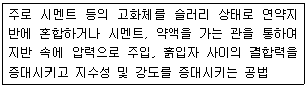
- 고결안정공법
- 치환공법
- 재하공법
- 탈수공법
(정답률: 66%)
22. 경량콘크리트공사에서 경량골재의 취급 및 저장에 관한 내용 중 옳지 않은 것은?
- 골재의 짐부리기, 쌓아 올리기 및 물뿌리기를 할 때 입자가 분리되지 않도록 한다.
- 골재를 쌓아둘 곳은 될 수 있는 대로 물빠짐이 좋게 한다.
- 골재를 쌓아둘 곳은 직사광선을 많이 받아 골재가 쉽게 건조될 수 있는 장소를 택한다.
- 골재에 때때로 물을 뿌리고 표면에 포장 등을 하여 항상 같은 습윤상태를 유지한다.
(정답률: 80%)
23. 철근콘크리트 슬래브와 철골보가 일체로 되는 합성구조에 관한 설명 중 옳지 않은 것은?
- 시어커넥터가 필요하다.
- 바닥판의 강성을 증가시키는 효과가 크다.
- 자재를 절감하므로 경제적이다.
- 경간이 작은 경우에 주로 적용한다.
(정답률: 69%)
24. 타일 시공시 유의사항으로 옳지 않은 것은?
- 여름에 외장타일을 붙일 경우에는 하루 전에 바탕면에 물을 충분히 적셔 둔다.
- 타일을 붙이기 전에 바탕의 들뜸, 균열 등을 검사하여 불량부분은 보수한다.
- 타일면은 일정간격의 신축줄눈을 두어 탈락, 동결융해 등을 방지할 수 있도록 한다.
- 타일을 붙이는 모르타르에 백화방지를 위하여 시멘트 가루를 뿌리는 것이 좋다.
(정답률: 82%)
25. 앞뒤 바퀴의 중앙부에 흙을 깎고 미는 배토판을 장착한 것으로, 주로 노반정지작업에 쓰이는 기계는?
- 모터그레이더(Motor Grader)
- 드래그라인(Drag Line)
- 트랙터셔블(Tractor Shovel)
- 백호(Back Hoe)
(정답률: 62%)
26. 벽돌쌓기 시 벽돌의 물축임에 대한 설명으로 옳지 않은 것은?
- 콘크리트 벽돌은 전날 물을 축여 표면이 어느 정도 마른 상태에서 쌓는 것이 좋다.
- 내화벽돌은 점토벽돌보다 물축임을 많이 하는 것이 좋다.
- 벽돌 흡수율이 8% 이하일 때는 물축임을 하지않아도 된다.
- 물축임을 하지 않으면 모르타르의 수분을 벽돌이흡수하여 모르타르 강도가 저하한다.
(정답률: 66%)
27. 압연강재가 냉각될 때 표면에 생기는 산화철 표피를 무엇이라 하는가?
- 스패터
- 밀스케일
- 슬래그
- 비드
(정답률: 75%)
28. 거푸집의 안정성 검토 시 고려되어야 할 사항에 대한 설명 중 옳지 않은 것은?
- 수직하중은 고정하중＋충격하중＋작업하중을 검토해야 한다.
- 수평하중은 풍압, 콘크리트 타설방향에 따른 편심하중 등으로 그 값을 정확히 예상하기 어렵다.
- 측압 관련 요인 중 콘크리트의 비중이 낮을수록 측압은 크게 된다.
- 일반적으로 허용처짐량은 절대처짐량으로 하고 추가처짐을 고려할 수 있다.
(정답률: 70%)
29. 지반의 구성층을 파악하기 위하여 낙하추 또는 화약의 폭발로 지반을 조사하는 방법은?(오류 신고가 접수된 문제입니다. 반드시 정답과 해설을 확인하시기 바랍니다.)
- 충격식 보링 지하탐사
- 전기저항 지하탐사
- 방사능 지하탐사
- 탄성파 지하탐사
(정답률: 57%)
30. 다음 중 창호의 기능검사 항목과 가장 거리가 먼 것은?
- 내열성
- 내풍압성
- 기밀성
- 수밀성
(정답률: 61%)
31. 흙막이의 작업공간을 확보하기 위하여 넓게 팔 필요가 있는 경우에 터파기 여유폭은 얼마인가? (단, 흙막이의 높이가 4m인 경우)
- 10∼30cm
- 30∼50cm
- 60∼90cm
- 90∼120cm
(정답률: 47%)
32. 건축 방수공사의 성능 확인을 위한 가장 일반적인 시험방법은?
- 수압시험
- 기밀시험
- 실물시험
- 담수시험
(정답률: 81%)
33. 석재의 일반적 성질에 대한 설명으로 옳지 않은것은?
- 석재의 비중은 조암광물의 성질ㆍ비율ㆍ공극의 정도 등에 따라 달라진다.
- 석재의 강도에서 인장강도는 압축강도에 비해 매우 작다.
- 석재의 공극률이 클수록 흡수율이 작아져 동결융해 저항성은 우수해진다.
- 석재의 흡수율은 암석의 종류에 따라 다르다.
(정답률: 75%)
34. 도급자가 공사를 착공하기 전에 공사내용과 공기를 가장 효과적으로 달성하면서 집행 가능한 최소의 투자를 전제하여 시공계획과 손익의 목표를 합리적으로 표현한 금액적 계획서를 일반적으로 무엇이라고 하는가?
- 목표예산
- 소요예산
- 도급예산
- 실행예산
(정답률: 53%)
35. 콘크리트 이어붓기에 대한 설명으로 옳지 않은 것은?
- 보 및 슬래브의 이어붓기 위치는 전단력이 작은 스팬의 중앙부에 수직으로 한다.
- 아치이음은 아치축에 직각으로 설치한다.
- 부득이 전단력이 큰 위치에 이음을 설치할 경우 에는 시공이음에 촉 또는 홈을 두거나 적절한 철근을 내어 둔다.
- 염분 피해의 우려가 있는 해양 및 항만 콘크리트 구조물에서는 시공이음부를 설치하는 것이 좋다.
(정답률: 72%)
36. 고강도 콘크리트 시공 시 배합에 관한 사항 중 옳지 않은 것은?
- 물시멘트비는 50% 이하로 한다.
- 단위수량은 210kg/m 이하로 한다.
- 슬럼프값은 150mm 이하로 한다.
- 단위시멘트량은 소요 워커빌리티 및 강도를 얻을 수 있는 범위 내에서 가능한 한 적게 되도록 정한다.
(정답률: 58%)
37. 철골공사 용접작업의 용접자세를 표현하는 기호로 옳은 것은?
- F：수평자세
- H：수직자세
- O：상향자세
- V：하향자세
(정답률: 76%)
38. 서로 다른 종류의 금속재가 접촉하는 경우 부식이 일어나는 경우가 있는데 부식성이 큰 금속 순으로 나열된 것은?
- 알루미늄＞철＞구리
- 철＞알루미늄＞구리
- 철＞구리＞알루미늄
- 구리＞철＞알루미늄
(정답률: 73%)
39. 공정관리 용어로서 전체 공사과정 중 관리상 특히 중요한 몇몇 작업의 시작과 종료를 의미하는 특정 시점을 무엇이라 하는가?
- 중간관리일
- 절점
- 표준점
- 비작업일
(정답률: 59%)
40. 커튼월(Curtain Wall)의 외관 형태별 분류에 해당 하지 않는 방식은?
- Mullion 방식
- Stick 방식
- Spandrel 방식
- Sheath 방식
(정답률: 55%)
3과목: 건축구조
41. 다음 조건을 가진 압축재의 좌굴하중 Pc값으로 옳은 것은?
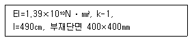
- 3123.8 kN
- 4517.8 kN
- 5012.8 kN
- 5713.8 kN
(정답률: 49%)
42. 강구조의 접합부에서 접합부에 휨모멘트 반력이 발생되지 않고, 전단력만을 저항하는 접합형식은 다음 중 어느 것인가?
- 강접합
- 모멘트접합
- 핀접합
- 반강접합
(정답률: 52%)
43. 다음 그림의 구조물은 몇 차 부정정 구조물인가?
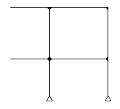
- 2차
- 3차
- 4차
- 5차
(정답률: 59%)
44. KBC2009기준에 따른 철근콘크리트 벽체의 전체 단면적에 대한 최소수평철근비로 옳은 것은? (단, 설계기준항복강도 400MPa 이상으로서 D16 이하의 이형철근)
- 0.0012
- 0.0015
- 0.0020
- 0.0025
(정답률: 48%)
45. KBC2009기준에 따른 인장이형철근 및 이형철선의 정착길이 ld의 최소값은?
- 150mm
- 200mm
- 250mm
- 300mm
(정답률: 48%)
46. 건축구조의 구조별 특징을 기술한 것 중 옳지 않은 것은?
- 조적식 구조는 압축력에는 강하지만 횡력에 취약하다.
- 가구식 구조는 삼각형보다 사각형으로 조립하면 더욱 안정한 구조체를 이룰 수 있다.
- 조립식 구조는 부재를 공장에서 생산ㆍ가공하여 현장에서 조립하므로 공기가 짧다.
- 일체식 구조는 비교적 균일한 강도를 가진다.
(정답률: 74%)
47. 그림과 같은 철근콘크리트 보의 균열모멘트 (Mcr)값은? (단, 보통중량 콘크리트 사용, fck=24MPa. fy=400MPa)
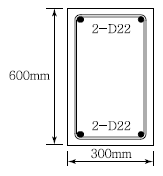
- 21.5kN ㆍ m
- 33.6kN ㆍ m
- 42.8kN ㆍ m
- 55.6kN ㆍ m
(정답률: 63%)
48. 다음과 같은 단순보의 최대 처짐량(δmax )이 2.0cm 이하가 되기 위하여 보의 단면2차모멘트는 최소 얼마 이상이 되어야 하는가? (단, 보의 탄성계수는E=1.25×104 N/mm )
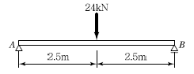
- 15,000cm4
- 17,500cm4
- 20,000cm4
- 25,000cm4
(정답률: 50%)
49. 철골구조에서 기둥－보 접합부와 관계된 구성요소로 가장 거리가 먼 것은?
- 엔드플레이트(End Plate)
- 다이어프램(Diaphragm)
- 스플릿티(Split Tee)
- 메탈터치(Metal Touch)
(정답률: 65%)
50. 다음 중 철골기둥의 주각부에 사용되는 보강재로 거리가 먼 것은?
- 필러 플레이트(Filler Plate)
- 윙 플레이트(Wing Plate)
- 사이드 앵글(Side Angle)
- 베이스 플레이트(Base Plate)
(정답률: 53%)
51. 중앙에 12,000N의 집중하중이 작용하는 지간 4m인 목재 보의 폭을 10cm로 잡을 때 그 높이를 최소 얼마로 해야 하는가? (단, 이 목재의 허용 휨 응력은 40MPa이다.)
- 12cm
- 14cm
- 16cm
- 18cm
(정답률: 35%)
52. 그림과 같은 강접골조에 수평력 P＝10kN이 작용하고 기둥의 강비 k＝∞인 경우, 기둥의 모멘트가 0이 되는 변곡점의 h0 위치 는? (단, 괄호 안의 기호는 강비이다.)
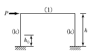
- 0.4h
- 0.5h
- (4/7)h
- h
(정답률: 54%)
53. 그림과 같은 단면의 단순보에서 보의 중앙점 C단면에 생기는 휨응력 σb 와 v 전단응력 의 값은?
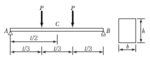
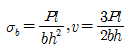
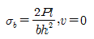
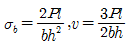
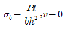
(정답률: 48%)
54. 철근콘크리트 보의 설계와 해석을 위한 가정으로 옳지 않은 것은?
- 변형을 받아 휘기 전에 평면인 단면은 변형 후에도 평면을 유지한다.
- 콘크리트 압축응력 분포 형상은 직사각형만 가능하다.
- 철근의 변형률은 같은 위치에 있는 콘크리트의 변형률과 같다.
- 콘크리트는 압축변형률이 기준 값 Ecu=0.003에 도달하면 붕괴된다고 가정한다.
(정답률: 62%)
55. 반원의 도심축에 대한 단면2차모멘트 Ix0는 얼마인가? (단,
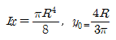
)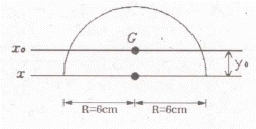
- 142.2 cm4
- 218.5 cm4
- 360.6 cm4
- 508.9 cm4
(정답률: 38%)
56. 그림과 같이 캔틸레버 보가 상수 k을 가지는 스프링에 의해 지지되어 있으며 집중 하중 P가 작용하고 있다. 스프링에 걸리는 힘은?
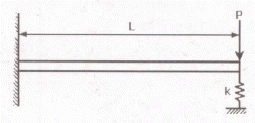
- PL3k/(3EI+kL3)
- 2PL3k/(3EI+kL3)
- PL3k/(2EI+kL3)
- 2PL3k/(2EI+kL3)
(정답률: 41%)
57. 고력볼트 1개의 인장파단 한계상태에 대한 설계인장강도는? (단, 볼트의 등급 및 호칭은 F10T, M20)
- 177 kN
- 236 kN
- 315 kN
- 385 kN
(정답률: 46%)
58. 그림과 같은 단순보의 양단 수직반력을 구하면?
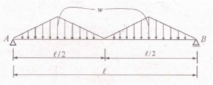
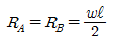
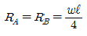
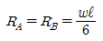
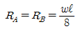
(정답률: 62%)
59. 그림과 같이 단순보의 중앙점에 하중 P가 작용할 때 C점의 처짐은?
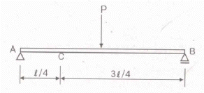
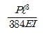
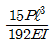
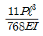
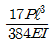
(정답률: 30%)
60. 다음 중 부동침하를 방지하기 위한 대책과 가장 거리가 먼 것은?
- 구조물의 하중을 기초에 균등하게 분포시킨다.
- 필요시 복합시초를 사용한다.
- 기초상호간을 지중보로 연결한다.
- 건물의 길이를 길게 한다.
(정답률: 73%)
4과목: 건축설비
61. 다음의 냉장부하 발생 요인 중 잠열 요소를 포함하고 있지 않은 것은?
- 인체의 발생열량
- 극간풍에 의한 취득열량
- 외기의 도입으로 인한 취득열량
- 일사에 의한 유리로부터의 취득열량
(정답률: 63%)
62. 전기에 관한 기초사항으로 옳지 않은 것은?
- 전류는 발열작용, 화학작용, 자기작용을 한다.
- 병렬회로에서는 각각의 저항에 흐르는 전류의 값이 같다.
- 오옴(ohm)의 법칙은 전압, 전류, 저항 사이의 규칙적인 관계를 나타낸다.
- 1[W]란 전압이 1[V]일 때 1[A]의 전류가 1[s] 동안에 하는 일을 말한다.
(정답률: 70%)
63. 3상 동력과 단상 전등부하를 동시에 사용할 수 있는 배전방식은?
- 단상 2선식 220[V]
- 3상 3선식 220[V]
- 단상 3선식 220/110[V]
- 3상 4선식 380/220[V]
(정답률: 74%)
64. 전기설비 용량이 각각 60[kW], 100[kW], 140[kW]인 부하설비가 있다. 그 수용률이 70%인 경우 최대수용전력은?
- 70[kW]
- 100[kW]
- 140[kW]
- 210[kW]
(정답률: 72%)
65. 다음과 같은 벽체의 열관류율은?
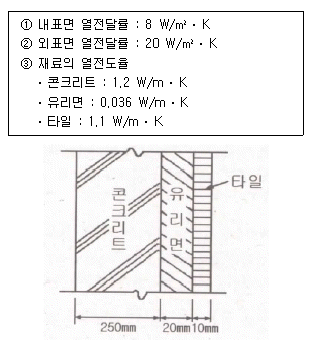
- 약 0.90 W/m2ㆍK
- 약 1.⑤ W/m2ㆍK
- 약 1.20 W/m2ㆍK
- 약 1.35 W/m2ㆍK
(정답률: 67%)
66. 터보 냉동기에 관한 설명으로 옳지 않은 것은?
- 왕복동식에 비하여 진동이 적다.
- 임펠러 회전에 의한 원심력으로 냉매가스를 압축한다.
- 일반적으로 대용량에는 부적합하며 비례제어가 불가능 하다.
- 30% 이하의 출력에서는 서징(surging) 현상이 일어나므로 운전이 곤란하다.
(정답률: 55%)
67. 엘리베이터의전기적 안전장치에 해당하지 않는 것은?
- 완충기
- 도어 스위치
- 과부하 계전기
- 파이널 리미트 스위치
(정답률: 58%)
68. 급수설비에서 펌프의 실양정이 의미하는 것은? (단, 물을 높은 곳으로 보내는 경우)
- 배관계의 마찰손실에 해당하는 높이
- 흡수면에서 토출수면까지의 수직거리
- 흡수면에서 펌프축 중심까지의 수직거리
- 펌프축 중심에서 토출수면까지의 수직거리
(정답률: 68%)
69. 다음 중 수격작용의 발생 원인과 가장 거리가 먼 것은?
- 밸브의 급폐쇄
- 감압밸브의 설치
- 배관방법의 불량
- 수도본관의 고수압(高水壓)
(정답률: 75%)
70. 옥내소화전설비를 설치하여야 하는 10층 건축물에 각 층마다 옥내소화전을 3개씩 설치하였을 경우, 옥개소화전 설비의 수원의 저수량은 최소 얼마 이상이어야 하는가?
- 2.6m3
- 7.8m3
- 14m3
- 21m3
(정답률: 73%)
71. 급수방식 중 고가수조방식에 관한 설명으로 옳은 것은?
- 급수압력이 일정하다.
- 2층 정도의 건물에만 적용이 가능하다.
- 위생성 측면에서 가장 바람직한 방식이다.
- 저수조가 없으므로 단수시에 급수할 수 없다.
(정답률: 72%)
72. 직류 엘리베이터에 관한 설명으로 옳지 않은 것은?
- 기동 토크를 쉽게 얻을 수 있다.
- 승강기분이 좋고 착상오차가 적다.
- 속도를 선택할 수 있으며 속도제어가 가능하다.
- 기어드식은 120[m/min] 이상의 속도를 요구하는 경우에 사용된다.
(정답률: 63%)
73. 3상 유도전동기의 속도제어 방법으로 옳지 않은 것은?
- 인버터를 사용하여 주파수를 변화시킨다.
- 2선의 접속을 바꿔 회전자계의 방향이 반대로 되도록 한다.
- 회전자에 접속되어 있는 저항을 변화시켜 비례 추이의 원리로 제어한다.
- 독립된 2조의 극수가 서로 다른 고정자 권선을 감아 놓고 필요에 따라 극수를 선택하여 극수를 변화시킨다.
(정답률: 60%)
74. 설치된 감지기의 주변온도가 일정한 온도상승률 이상으로 되었을 경우에 작동하는 화재 감지기는?
- 차동식
- 정온식
- 광전식
- 이온화식
(정답률: 73%)
75. 보일러의 부하가 다음과 같이 구성되는 경우, 보일러의 정격출력은?
- HR
- HR+HW
- HR+HW+HP
- HR+HW+HP+He
(정답률: 51%)
76. 공기조화방식 중 팬코일 유닛방식에 관한 설명으로 옳지 않은 것은?
- 각 실에 수배관으로 인한 누수의 우려가 있다.
- 덕트 샤프트나 스페이스가 필요없거나 작아도 된다.
- 각 실의 유닛은 수동으로도 제어할 수 있고, 개별제어가 쉽다.
- 유닛을 창문 밑에 설치하면 콜드 드래프트(cold draft)가 발생할 우려가 높다.
(정답률: 70%)
77. 광속이 2000[lm]인 백열전구로부터 2[m] 떨어진 책상에서 조도를 측정하였더니 200[lx]이었다. 이 책상을 백열전구로부터 4[m] 떨어진 곳에 놓고 측정하였을 때 조도는?
- 50[lx]
- 100[lx]
- 150[lx]
- 200[lx]
(정답률: 80%)
78. 호텔의 주방이나 레스토랑의 주방 등에서 배출되는 세정배수 중의 유지분을 포집하기 위해 사용하는 것은?
- 오일 포집기
- 샌드 포집기
- 그리스 포집기
- 플라스터 포집기
(정답률: 59%)
79. 현열비를 옳게 표현한 것은?
- 잠열의 변화량에 대한 현열의 변화량의 비율
- 현열의 변화량에 대한 잠열의 변화량의 비율
- 전열량(enthalpy)의 변화량에 대한 현열의 변화량의 비율
- 전열량(enthalpy)의 변화량에 대한 잠열의 변화량의 비율
(정답률: 72%)
80. 다음과 같은 특징을 갖는 간선의 배선방식은?
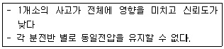
- 루프식
- 평행식
- 나뭇가지식
- 나뭇가지 평행식
(정답률: 60%)
5과목: 건축법규
81. 일반주거지역 안에서 건축물을 건축할 경우 건축물이 높이 4미터 이하인 부분은 정북 방향의 인접 대지경계선으로부터 원칙적으로 최소 얼마 이상 거리를 띄어야 하는가?
- 1m
- 1.5m
- 2m
- 2.5m
(정답률: 64%)
82. 다음 중 건축허용오차(%)가 가장 큰 것은?
- 건폐율
- 용적률
- 건축물 높이
- 건축선의 후퇴거리
(정답률: 49%)
83. 건축허가신청에 필요한 설계도서에 해당하지 않는 것은?
- 배치도
- 투시도
- 건축계획서
- 실내마감도
(정답률: 72%)
84. 건축법령상 용어의 정의가 옳지 않은 것은?
- 초고층 건축물이란 층수가 50층 이상이거나 높이가 200미터 이상인 건축물을 말한다.
- 증축이란 기존 건축물이 있는 대지에서 건축물의 건축 면적, 연면적, 층수 또는 높이를 늘리는 것을 말한다.
- 개축이랑 건축물이 천재지변이나 그 밖의 재해로 멸실된 경우 그 대지에 종전과 같은 규모의 범위에서 다시 축조하는 것을 말한다.
- 부속건축물이랑 같은 대지에서 주된 건축물과 분리된 부속용도의 건축물로서 주된 건축물을 이용 또는 관리하는데에 필요한 건축물을 말한다.
(정답률: 77%)
85. 다음은 건축법령상 지하층의 정의 내용이다. ( )안에 알맞은 것은?
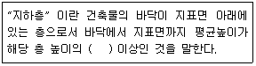
- 2분의 1
- 3분의 1
- 3분의 2
- 4분의 1
(정답률: 82%)
86. 문화 및 집회시설 중 공연장의 개별관람석 바닥면적이 1,500m2일 경우 개별관람석 출구는 최소 몇 개소 이상 설치하여야 하는가? (단, 각 출구의 유효너비를 2m로 하는 경우)
- 3개소
- 4개소
- 5개소
- 6개소
(정답률: 62%)
87. 공개공지 등을 확보하여야 하는 대상 건축물에 공개공지등을 설치하는 경우, 해당 건축물에 완화하여 적용할 수 있는 기준 내용은?
- 건폐율
- 용적률
- 대지면적의 최소한도
- 건축선에 따른 건축 제한
(정답률: 52%)
88. 다음과 같은 조건에 있는 건축물의 연면적은? (단, 용적률을 산정하는 경우의 연면적)
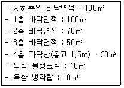
- 220m2
- 320m2
- 350m2
- 370m2
(정답률: 71%)
89. 건축법령상 건축물과 해당 건축물이 속하는 용도의 연결이 옳지 않은 것은?
- 가족호텔 - 숙박시설
- 세차장 - 자동차관련시설
- 어린이회관 - 관광휴게시설
- 일반음식점 - 제1종 근린생활시설
(정답률: 61%)
90. 건축법령상 다중이용 건축물에 해당하지 않는 것은?
- 판매시설의 용도로 쓰는 바닥면적의 합계기 5,000m2인 건축물
- 종합병원의 용도로 쓰는 바닥면적의 합계기 5,000m2인 건축물
- 관광숙박시설의 용도로 쓰는 바닥면적의 합계기 5,000m2인 건축물
- 업무시설의 용도로 쓰는 바닥면적의 합계기 5,000m2인 건축물
(정답률: 65%)
91. 다음 중 승용승강기를 가장 적게 설치할 수 있는 건축물의 용도는? (단, 6층 이상의 거실면적의 합계가 10,000m2 이며, 8인승 승강기를 설치하는 경우)
- 병원
- 위락시설
- 숙박시설
- 공동주택
(정답률: 64%)
92. 공동주택과 오피스텔의 난방설비를 개별난방방식으로 하는 경우에 관한 기준 내용으로 옳은 것은?
- 보일러의 연도는 내화구조로서 공동연도로 설치할 것
- 보일러실의 윗부분에는 그 면적이 0.4m2 이상인 환기창을 설치할 것
- 오피스텔의 경우에는 난방구획마다 방화구조로 된 벽과 갑종방화문으로 된 출입문으로 구획할 것
- 보일러는 거실 외의 곳에 설치하되, 보일러를 설치하는 곳과 거실 사이의 경계벽은 출입구를 제외하고는 방화구조의 벽으로 구획할 것
(정답률: 48%)
93. 비상용 승강기 승강장의 구조에 관한 기준 내용으로 옳지 않은 것은?
- 채광이 되는 창문이 있거나 예비전원에 의한 조명성비를 할 것
- 벽 및 반자가 실내에 접하는 부분의 마감재료는 불연재료로 할 것
- 옥외에 승강장을 설치하는 경우, 승강장의 바닥면적은 비상용 승강기 1대에 대하여 6m2 이상으로 할 것
- 승강장은 각층의 내부와 연결될 수 있도록 하되, 그 출입구(승강로의 출입구는 제외)에는 갑종방화문을 설치할 것
(정답률: 43%)
94. 지하식 또는 건축물식 노외주차장의 차로에 관한 기준 내용으로 옳지 않은 것은?
- 높이는 주차바닥면으로부터 2.3미터 이상으로 하여야 한다.
- 경사로의 종단경사도는 직선부분에서는 14퍼센트를 곡선부분에서는 17퍼센트를 초과하여서는 아니된다.
- 주차대수규모가 50대 이상인 경우의 경사로는 너비 6미터 이상인 2차로를 확보하거나 진입차로와 진출차로를 분리하여야 한다.
- 곡선 부분은 자동차가 6미터(같은 경사로를 이용하는 주차장의 총주차대수가 50대 이하인 경우에는 5미터)이상의 내변반경으로 회전할 수 있도록 하여야 한다.
(정답률: 64%)
95. 주차장에서 장애인용 주차단위구획의 최소 크기는? (단, 평행주차형식 외의 경우)
- 2.3 × 5.0m
- 2.5 × 5.1m
- 3.3 × 5.0m
- 2.0 × 6.0m
(정답률: 72%)
96. 저층주택을 중심으로 편리한 주거환경을 조성하기 위하여 주거지역을 세분화하여 지정한 지역은?
- 제1종 일반주거지역
- 제2종 일반주거지역
- 제3종 일반주거지역
- 제4종 일반주거지역
(정답률: 79%)
97. 다음의 노외주차장에 관한 기준 내용 중 ( )안에 알맞은 것은?
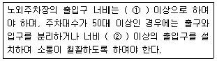
- ① 3.0m, ② 5.0m
- ① 3.5m, ② 5.5m
- ① 3.0m, ② 5.5m
- ① 3.5m, ② 5.0m
(정답률: 38%)
98. 다음의 시가화조정구역의 지정과 관련된 기준 내용 중 밑줄 친 대통령령으로 정하는 기간으로 옳은 것은?
- 3년 이상 10년 이내
- 3년 이상 20년 이내
- 5년 이상 10년 이내
- 5년 이상 20년 이내
(정답률: 76%)
99. 다음 중 공동구의 설치목적과 가장 거리가 먼 것은?
- 미관의 개선
- 도로구조의 보전
- 교통의 원활한 소통
- 유수지의 충분한 확보
(정답률: 59%)
100. 다음 중 설치하여야 하는 차로의 최소 너비가 다른 주차 형식은? (단, 출입구가 1개인 노외주차장의 경우)
- 평행주차
- 교차주차
- 45도 대향주차
- 60도 대향주차
(정답률: 60%)